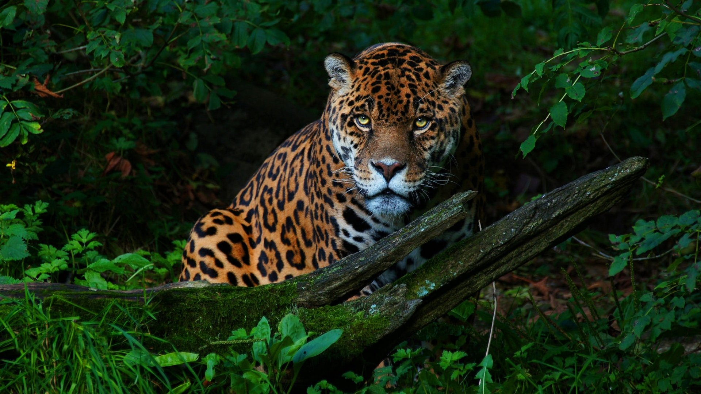
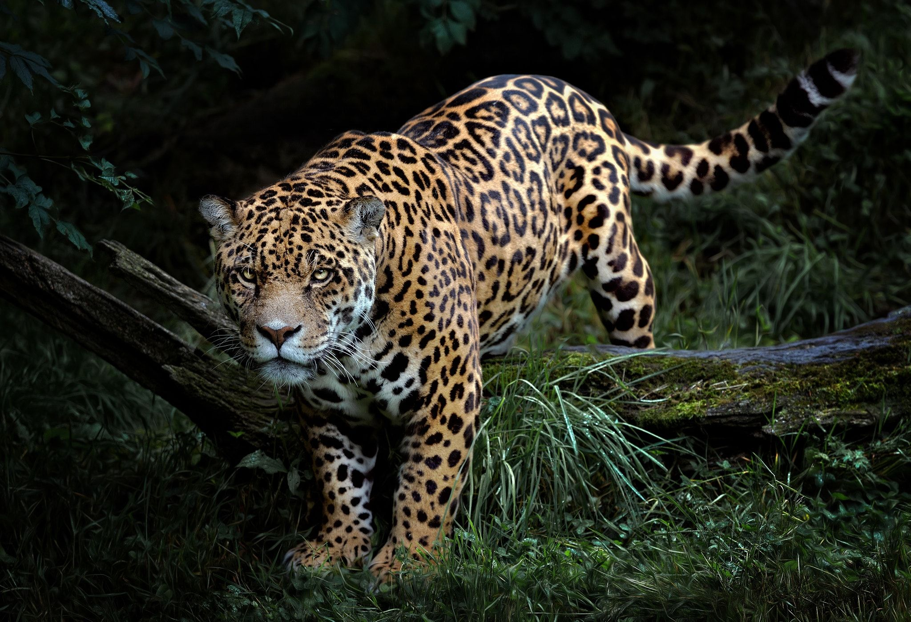
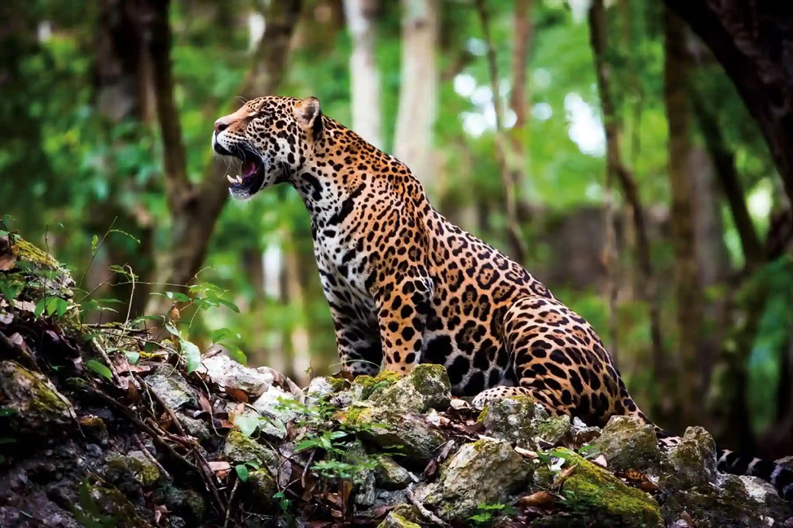
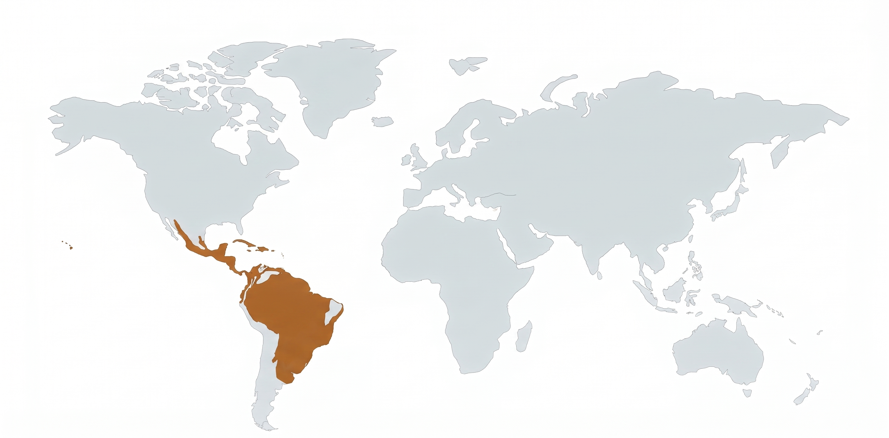

Jaguar
Panthera onca
O jaguar (Panthera onca), é o maior felino do continente americano e um dos predadores mais formidáveis e respeitados das florestas tropicais. Distingue-se de imediato pelo seu corpo extremamente musculoso, compacto e robusto, pernas relativamente curtas e uma cabeça larga com uma força de mordida excecional. A sua bela pelagem de tom dourado ou acastanhado é adornada com rosetas marcantes que contêm pequenas pintas pretas no seu interior, funcionando como uma camuflagem perfeita entre a luz e a sombra da vegetação densa.
Habitat Natural

O jaguar habita preferencialmente florestas tropicais densas, bacias hidrográficas extensas, zonas de pântano (como o Pantanal) e bosques subtropicais da América Central e do Sul. Ao contrário de muitos outros grandes felinos que evitam a água, o jaguar é um nadador exímio e adora rios e zonas húmidas, onde passa grande parte do tempo a refrescar-se ou a caçar. São animais solitários e territoriais, que estabelecem vastas áreas de circulação ao longo de margens fluviais e florestas fechadas.
Dieta
O jaguar é um carnívoro estrito e um predador de topo no topo da cadeia alimentar, com hábitos predominantemente crepusculares e noturnos. A sua dieta é extremamente variada e poderosa, incluindo capivaras, pecaris, veados, caimans e até tartarugas, cujas carapaças consegue perfurar facilmente com a sua poderosa mandíbula. Ao contrário de outros felinos que atacam preferencialmente o pescoço, o jaguar utiliza frequentemente uma mordida direta no crânio através dos ossos temporais para neutralizar instantaneamente as suas presas.
Curiosidades
- O jaguar possui a mordida mais poderosa de todos os grandes felinos em proporção ao seu tamanho, sendo capaz de esmagar carapaças de tartaruga e ossos grossos com facilidade.
- É um nadador nato e entusiasta, atravessando frequentemente rios largos e caudalosos em busca de presas ou para patrulhar o seu território.
Os nossos Jaguares
No Zoo Jonçela, um magnífico e imponente par de jaguares — o forte macho Jacinto e a atenta fêmea Yara — atrai a admiração de todos os visitantes na zona tropical do parque. Com 6 anos de idade, o Jacinto é um macho de constituição muito robusta que mede cerca de 1,6 metros de corpo (com uma cauda de quase 75 cm) e pesa perto de 95 kg. A Yara, com 5 anos, apresenta uma compleição ligeiramente mais leve, medindo 1,4 metros e pesando cerca de 75 kg. Ambos partilham um recinto arborizado com um lago de grande dimensão e estruturas de imersão, onde demonstram toda a sua força, agilidade e paixão pela água.